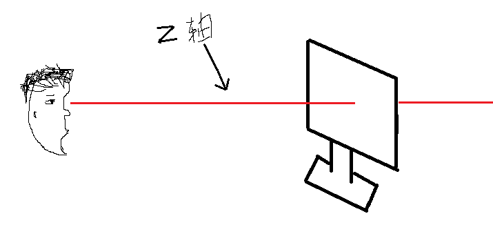
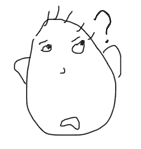

【CSS-task】
小课堂【郑州第46期】
主 题：z-index和层叠上下文如何形成的
分享人：汪开放
目录
1.背景介绍
2.知识剖析
3.常见问题
4.解决方案
5.编码实战
6.扩展思考
7.参考文献
8.更多讨论
1.背景介绍
z-index是针对网页显示中的一个特殊属性。因为显示器是显示的图案是一个二维平面，拥有x轴和y轴来表示位置属性。为了表示三维立体的概念如显示元素的上下层的叠加顺序引入了z-index属性来表示z轴的区别。表示一个元素在叠加顺序上的上下立体关系。


2.知识剖析
第一，看看z-index
z-index可能有的值：

注释:所有主流浏览器都支持 z-index 属性。任何的版本的 Internet Explorer （包括 IE8）都不支持属性值 "inherit"。
IE6/7下position不为static，且z-index不存在时z-index为0，除此之外的浏览器z-index为auto。
z-index为auto的元素不参与层级关系的比较.
第二，层叠上下文？
层叠上下文:英文叫“stacking content”,是HTML中的一个三维的概念。如果一个元素含有层叠上下文，我们可以理解为这个元素在z轴上就“高人一等”。这里出现了z轴，z轴是我们的眼睛与页面的垂直抽象的距离。
层叠上下文是一个概念，跟BFC类似，概念的这个东西是比较抽象的，要好好理解理解。 
第三，层叠顺序？
层叠顺序：英文叫“stacking order”. 表示元素发生层叠时候有着特定的垂直显示顺序

3.常见问题
处理两个或两个以上盒子之间z-index的复杂关系？
4.解决方案
1,两个div，无设置z-index，第二个粉色div向上移动50px时.
2,两个div，粉色div设置z-index为-5时，
3,黄色div设置z-index为30，粉色为25时，30>25，
4,如果两个元素都没有定位发生位置重合现象或者两个都已定位元素且z-index相同发生位置重合现象，那么按文档流顺序，后面的覆盖前面的。
5,如果两个元素都没有设置z-index，使用默认值，一个定位一个没有定位，那么定位元素覆盖未定位元素
6,如果父元素z-index有效，那么子元素无论是否设置z-index都和父元素一致，在父元素上方
7,如果父元素z-index失效（未定位或者使用默认值），那么定位子元素的z-index设置生效
8,如果兄弟元素的z-index生效，那么其子元素覆盖关系有父元素决定
5.编码实战
6.扩展思考
问题：为什么内联元素的层叠顺序要比块状元素高？
内联元素一般都是基于语义级(semantic)的基本元素，它只能容纳文本或者其他内联元素，通常被包括在块元素中使用，常见内联元素有“a、b、br”等,基本上可以说成内联元素变成了块状元素的子元素，所以子元素也就是内联元素要高于块状元素。
7.参考文献
参考1：http://www.myexception.cn/HTML-CSS/2023767.html"
参考2：http://www.w3cplus.com/css/how-z-index-works.html
参考3：鑫空间
8.更多讨论
讨论点：opacity是否会对z-index有影响？
鸣谢
感谢大家观看
BY : 沁修 |汪开放